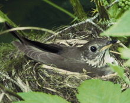
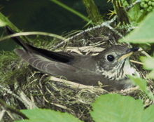

| Grey-cheeked Thrush | |
|---|---|
|  | |
| Conservation status | |
| Binomial name | |
| Catharus minimus (Lafresnaye, 1848) |
|
| Synonyms | |
|
Hylocichla aliciae |
| Grey-cheeked Thrush | |
|---|---|
|  | |
| Conservation status | |
| Binomial name | |
| Catharus minimus (Lafresnaye, 1848) |
|
| Synonyms | |
|
Hylocichla aliciae |
The Grey-cheeked Thrush, Catharus minimus, is a medium-sized thrush. This species is 15–17 cm in length, and has the white-dark-white underwing pattern characteristic of Catharus thrushes. It is a member of a close-knit group of migrant species together with the Veery and Bicknell's Thrush (Winker & Pruett, 2006); it forms a cryptic species pair with the latter. The Grey-cheeked Thrush is all but indistinguishable from Bicknell's Thrush except by its slightly larger size and different song. The two were formerly considered conspecific.[1]
Adults are olive-brown on the upperparts. The underparts are white with gray on the flanks; the breast is greyish brown with darker spots. They have pink legs and a faint grey eye ring. They have gray cheeks.
Their breeding habitat is the northern spruce forests across northern Canada and Alaska. They make a cup nest in a low location on a conifer or on the ground at the base of a shrub.
The breeding range of Grey-cheeked Thrush extends into Siberia.[2]
These birds migrate to northern South America. This species is a rare vagrant to Europe. Its northerly breeding range and long-distance migration make it one of the more regular North American passerine migrants to cross the Atlantic.
They forage on the forest floor, mainly eating insects and berries.
This bird's song is a distant-sounding series of flute-like tones rising then falling in pitch. Like Bicknell's Thrush, they are very secretive during the nesting season.

{kind=link}